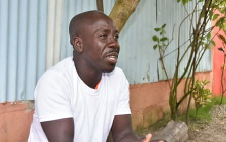
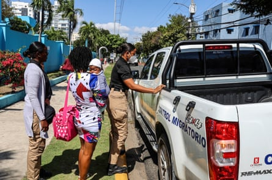
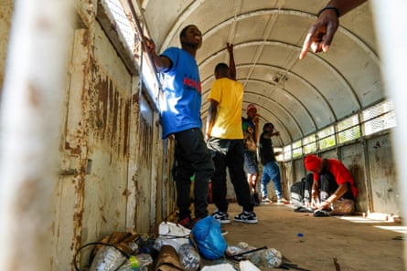
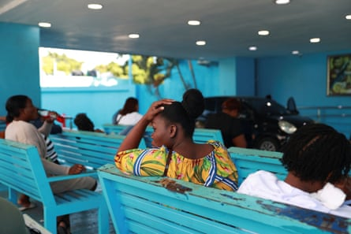

About an hour after giving birth on the floor of her one-room shack in the Dominican Republic , Lourdia Jean Pierre, 32, started gasping for breath.
Her husband, Ronald Jean, knew something was seriously wrong, and shouted for help from the neighbours.
“She gave birth without any problems and was fine for a while,” he says. “But then she felt sick and people told me to call the emergency services. When they arrived, she was already dead.”
Ronald Jean, whose wife died after giving birth at home due to lack of medical support for Haitian migrants in the Dominican Republic.Photograph: Juan Antonio Guio/Acento
Jean will never know what might have happened on 9 May had his wife given birth in hospital, surrounded by medical staff and equipment, instead of at home. But he knows that was never an option.
The couple from Haiti were living without the correct immigration papers in the Dominican Republic, which shares the island of Hispaniola in the Caribbean with Haiti. In April, as Jean Pierre was approaching her due date, the Dominican government announced a crackdown on undocumented migrants. Almost immediately, images of pregnant women and new mothers who had been rounded up by immigration agents in hospitals and deported were all over the media.
“It’s a form of persecution,” says Jean. “Haitian people have been hiding, afraid to go out for fear of being deported. It was not my decision [that Lourdia give birth at home]. I feel like I didn’t have a choice. We were scared.”
Human rights groups have called the policy cruel, racist and misogynist . The UN has raised concern over the increase in deportations by the Dominican Republic of vulnerable Haitians – particularly pregnant women, new mothers and children. According to a recent statement released by the UN, 900 pregnant women or new mothers were deported in one month .
A Haitian new mother is transferred by immigration officers from a hospital in Santo Domingo on 21 April.Photograph: Erickson Polanco/AFP/Getty Images
The worsening situation in Haiti has severely damaged health services. Cholera outbreaks are spreading. Gender-based violence is increasing and sexual violence against children has risen tenfold , according to the UN. At least 5,600 people were killed in gang violence last year, it says. The kidnap and murder of workers has put about two-thirds of medical facilities out of use.
When the emergency services arrived after Jean Pierre had given birth and died, they took the newborn baby to the hospital and Jean went with them. While his child was being seen to, he was approached by officers who asked for his papers. He explained his work permit had expired, and they arrested him.
“I was crying a lot. My heart was breaking. The baby was there, with nobody else to look after him, I told them,” he says.
Other people in the vicinity overheard and came to his defence, pleading with the immigration agents to leave him alone. “In the end, they understood and let me go.”
Haitian men are held in an immigration vehicle after being apprehended while at a hospital in Santo Domingo on 21 April.Photograph: AFP/Getty Images
Jean returned home and hastily borrowed money to bury his wife the same day, as is custom. It was a rushed affair, as Jean was worried about the authorities finding out. “I was scared. People say that when a lot of Haitians gather together, immigration come and take people. [The burial] was very quick because I didn’t want that to happen.”
News of Jean Pierre’s death spread after people from his community released a video showing her body on the floor of her home in the municipality of Pedro Sánchez in the province of El Seibo.
More than 400 people from organisations across the world signed a letter denouncing her death.
“The death of Lourdia Jean Pierre, as well as the persecution, detention and deportation of thousands of pregnant Haitian immigrant women, are actions that violate national and international laws and protocols, the most elemental human rights, and people’s dignity,” it says.
Jean and his wife were living in the Dominican Republic because of the situation in Haiti, where gang warfare has destroyed the country. He was first granted a work permit in 2018 for a job in agriculture, and used to go back and forth to Haiti to visit his wife. When the crisis in the country worsened in 2021, Jean Pierre came to the Dominican Republic to be with him. They left two children with relatives there, and then another son was born in the Dominican Republic. Jean’s work permit expired in 2020 and he was unable to gain legal status to be in the country.
Haitian women outside a maternity ward in Santo Domingo, 14 January. Gang warfare in Haiti has driven many to cross the border into the Dominican Republic.Photograph: Erika Santelices/Reuters
He blames the government and gang members in Haiti for his wife’s death. “They make security very hard and make it so that people can’t live in Haiti and are forced to come to the Dominican Republic,” he says. “I respect the Dominican laws but life in Haiti is so hard, people don’t have a choice.”
After losing his wife, Jean is set on returning to his country, however. First, he needs to pay back the money he owes for her funeral.
“I am not protected in the Dominican Republic. [Life here] is very hard so I have no choice. I want to go back to Haiti,” he says. “Sometimes I cry, then I pray. I am in a very difficult situation.”